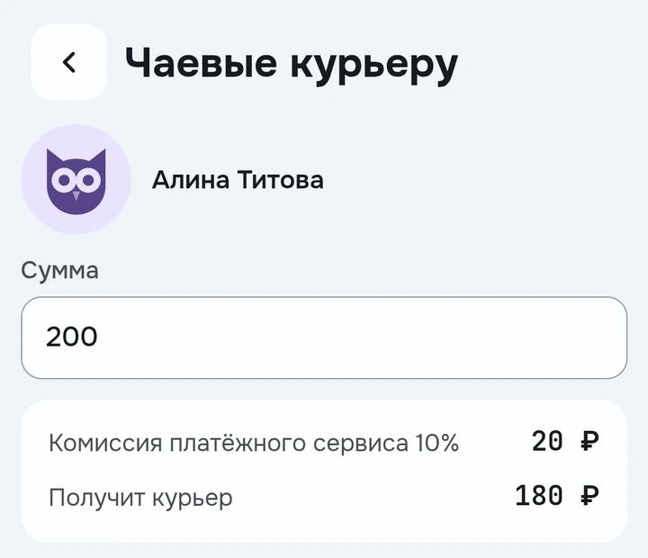

Посмотреть сервисы
Условия, сравнение и отзывы курьеров в одном месте
Посмотреть экранУзнайте больше о сервисах и курьерах, сохраните профиль и скажите спасибо
Что здесь можноНастоящие экраны приложенияУсловия, сравнение и отзывы курьеров в одном месте
Посмотреть экранОткрытые профили и только те данные, которыми человек решил поделиться
Посмотреть экранДобавьте курьера в избранное, чтобы потом легко найти
Посмотреть экранВ профиле курьера есть чаевые. Перед отправкой видно комиссию и сумму, которую он получит
Посмотреть, как это выглядит